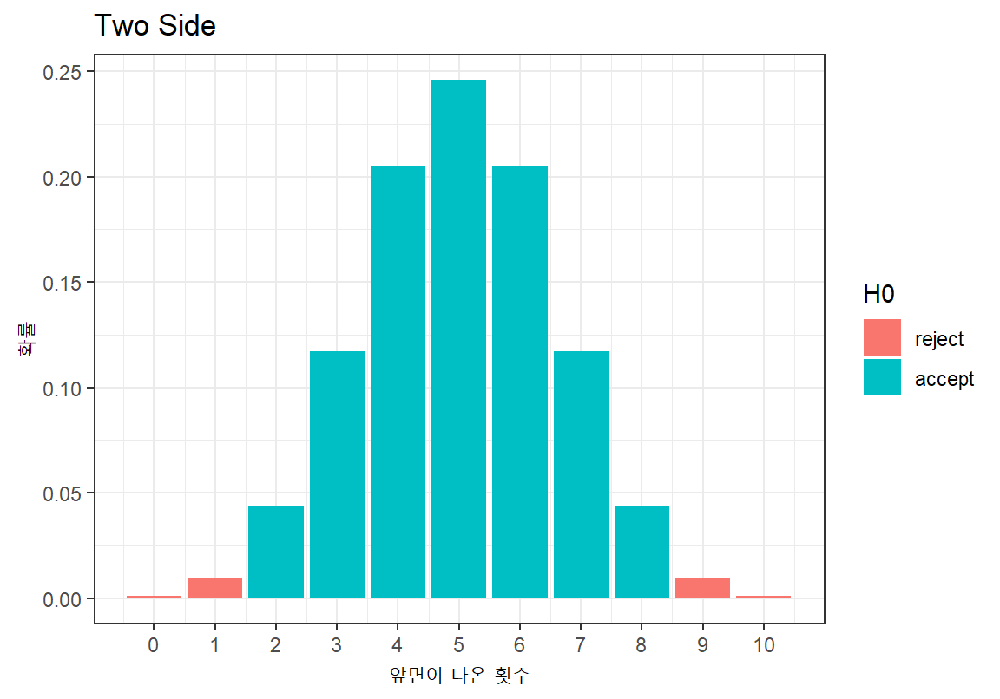
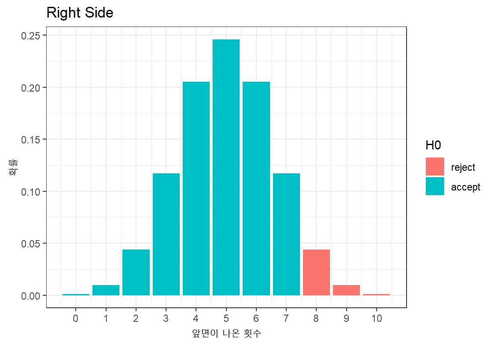
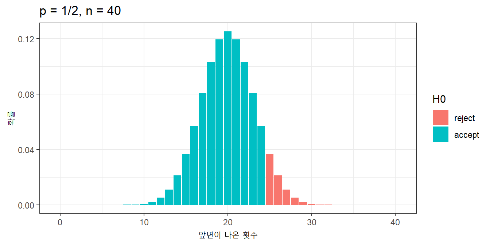

Chapter 10 가설검정이란?
통계적 가설검정은 모집단의 특성에 대한 가설을 설정한 뒤에 표본관찰을 통하여 그 가설의 채택여부를 결정하는 통계적 분석방법이다. 예를 들어, 동전 던지기 게임을 하는데 “지금 게임에 사용되는 동전은 앞면과 뒷면이 나올 확률이 동일한 공정한 동전이다”라는 가설을 세웠다고 하자. 표본관찰을 위해 10번 동전을 던져 본 뒤 앞면이나 뒷면이 나오는 횟수를 세어서 이 가설이 적합한지를 판단하였다면 이는 통계적 가설검정을 수행한 것이다. 표본을 관찰해보니, 만약 동전이 공정한 것이라고 생각되기에는 너무 많은 앞면이나 뒷면이 나오면 가설을 기각하고, 그렇지 않은 경우에는 가설을 채택한다. 그림 10.1는 가설검정의 일반적인 절차를 보여준다.
Figure 10.1: 가설검정의 절차
10.1 가설의 설정
보통 어떤 모집단에 대한 가설검정을 할 때 먼저 모집단에 대해 서로 대립되는 두 개의 가설을 설정한다. 위의 예에서는 동전이 공정한 것이다라는 가설과 동전이 편향되어 있다는 가설이 서로 대립되고 있다. 대립되는 두 가설 중 일반적으로 받아들여지는 가설을 귀무가설(null hypothesis)이라고 하고, 통계적으로 상당한 증거가 있어야만 받아들여지는 가설을 대립가설(alternative hypthesis)이라고 한다. 앞의 예에서는 상단한 증거가 없는 한 동전은 공정한 것이라고 판단하므로 이 가설이 귀무가설이 된다. 가설검정이란 표본관찰 또는 실험을 통하여 귀무가설(\(H_0\))과 대립가설(\(H_1\)) 중에서 하나를 선택하는 과정이다. 다음은 다양한 가설검정 문제에서 가설 수립을 한 예이다.
Example 10.1 게임에 사용되는 동전이 있을 때, 앞면이 나올 확률을 \(p\)라고 하자. 동전의 앞면이 나올 확률에 대하여 다음과 같이 가설을 수립할 수 있다.
\(H_0\): \(p \, = \, 1/2\) (게임에 사용되는 동전은 공정한 것이다.)
\(H_1\): \(p \, \neq \, 1/2\) (게임에 사용되는 동전은 편향된 것이다.)
Example 10.2 2010 년 초등학교 4학년 학생의 평균신장이 142cm였다. 2020 년의 초등학교 4학년 학생의 신장의 평균을 \(\mu\)라고 하자. 그러면 2020 년도의 초등학교 4학년의 평균 신장에 대하여 다음과 같이 가설을 수립할 수 있다.
\(H_0\): \(\mu \, = \, 142\) (2020년의 초등학교 4학년 학생의 평균신장도 142cm일 것이다.)
\(H_1\): \(\mu \, > \, 142\) (2020년의 초등학교 4학년 학생의 평균신장도 142cm보다 클 것이다.)
Example 10.3 타이어 제조사에서 새로운 공정을 도입하려고 한다. \(\mu_1\)을 재래식 공정으로 제조된 타이어의 평균 수명, \(\mu_2\)를 신규 공정으로 제조된 타이어의 평균 수명이라고 하자. 그러면 신규 공정으로 제조된 타이어의 평균 수명에 대하여 다음과 같이 가설을 수립할 수 있다.
\(H_0\): \(\mu_1 \, = \, \mu_2\) (재래식 공정이나 신규 공정이나 타이어의 평균 수명은 동일할 것이다.)
\(H_1\): \(\mu \, < \, \mu_2\) (신규 공정으로 제조된 타이어의 평균 수명이 더 길 것이다.)
가설검정은 대립되는 두 가설 \(H_0\)와 \(H_1\) 중에서 하나를 선택하는 것이다. 그러므로 \(H_0\)를 채택(accept)하면 \(H_1\)를 기각(reject)하게 되고, \(H_0\)를 기각하면 \(H_1\)를 채택하게 된다.
10.2 검정통계량과 표본 분포
검정통계량(test statistic)은 \(H_0\) 와 \(H_1\) 중 어느 하나를 채택하는 데 사용되는 표본 통계량이다. 앞의 예에서는 동전을 10번 던져 나오는 앞면의 수 또는 뒷면의 수가 검정통계량이 될 수 있다.
검정통계량이 정해지면 귀무가설 \(H_0\)가 맞다는 가정 하에 검정통계량의 표본 분포를 구한다. 동전이 공정한지를 보는 Example 10.1 문제에서 검정통계량 \(T\)를 10 번 던져서 나온 앞면의 수라고 하였다고 하자. 그러면 귀무가설 하에서 검정통계량 \(T\)는 크기 \(n=10\)이고 성공 확률 \(p=1/2\)인 이항분포를 따르므로 다음과 같이 검정통계량의 표본 분포를 구할 수 있다.
| 앞면이 나온 횟수 | 확률 |
|---|---|
| 0 | 0.0009766 |
| 1 | 0.0097656 |
| 2 | 0.0439453 |
| 3 | 0.1171875 |
| 4 | 0.2050781 |
| 5 | 0.2460938 |
| 6 | 0.2050781 |
| 7 | 0.1171875 |
| 8 | 0.0439453 |
| 9 | 0.0097656 |
| 10 | 0.0009766 |
10.3 기각역과 유의수준
기각역(critical region)은 귀무가설이 기각되고 대립가설이 채택되는 검정통계량의 영역을 의미한다. 기각역은 유의수준 \(\alpha\)에 의해 결정된다. 유의수준이란 귀무가설이 옳은데도 불구하고 이를 기각할 확률을 의미한다.
표본의 검정통계량 값이 매우 예외적인 값이 나왔다고 하자. 예를 들어 Example 10.1 에서 10번 동전을 던져서 앞면이 10번 나왔다고 하자. 귀무가설이 맞다는 가정 하에 10번 던졌을 때 모두 앞 면이 나올 확률은 0.000977로 매우 작다. 이러한 사건은 1,000 번 이러한 실험을 반복하면 1 번 정도 발생하는 예외적인 사건이다. 그러므로 통계적 가설검정에서는 귀무 가설이 참인데 이러한 예외적인 사건이 발생했다고 판단하기보다는, 귀무가설을 기각하고 동전이 공정하지 않다는 대립가설을 채택하는게 차라리 더 합리적이라고 판단한다.
기각역이란, 귀무가설이 참이라면 매우 예외적인 확률로 발생하는 검정통계량의 영역이어서 차라리 귀무가설을 기각하고 대립가설을 채택하는 구간이다. 그러나 검정통계량의 값이 기각역에 포함되는 사건이, 귀무 가설이 참이어도 예외적으로 발생할 수 있는 사건이지 전혀 발생하지 않는 사건은 아니기 때문에 귀무가설이 참인데도 귀무가설을 기각할 확률은 존재한다. 그리고 이 확률을 유의수준이라고 한다.
그러면 얼마나 예외적인 일이 발생해야 귀무가설을 기각하고 대립가설을 채택해야 할까? 일반적으로 유의수준 \(\alpha\)를 5%로 정하지만, 문제에 따라 1%나 10%로 하는 경우도 있다. 유의수준 \(\alpha\)가 5%이면, 귀무가설 하에서 구한 검정통계량의 값이 발생할 가능성이 5% 이하인 영역에서 발생했으면 귀무가설을 기각하고, 그렇지 않으면 귀무가설을 채택하겠다는 의미이다. 다시 말해 검정통계량이 발생할 가능성이 예외적인 5% 영역에서 발생하면 귀무가설이 맞을 ’가능성이 작다’라고 판단하겠다는 것이다.
기각역의 크기는 유의수준 \(\alpha\)에 의해서 결정되지만 기각역의 위치는 대립가설에 의해 결정된다. 기각역의 위치가 검정통계량 값의 양측에 있으면 양측검정, 기각역의 위치가 한 쪽에 있으면 단측검정이라 한다.
- 양측검정(two-side test)은 귀무가설이 ’모수가 특정값이다’라고 할 때, 대립가설이 ’모수가 특정값이 아니다’라고 주어지는 경우에 발생한다.
- 단측검정(one-side test)은 왼쪽에 기각역이 생기는 왼쪽 단측검정과 오른쪽에 생기는 오른쪽 단측검정으로 나뉘어진다. 왼쪽 단측검정은 대립가설이 ’모수가 특정 값보다 작다’로 주어지는 경우에 발생한다. 오른쪽 단측검정은 대립가설이 ’모수가 특정 값보다 크다’로 주어지는 경우에 발생한다.
Example 10.1는 대립가설이 동전의 앞면이 나올 확률이 \(1/2\)이 아니라는 것이다. 그러므로 동전의 앞면이 나올 확률이 너무 크거나 작은 경우 모두가 관심의 대상이다. 따라서 10번 던져서 앞면이 나오는 수를 \(x\)라고 하면, \(x\)가 너무 크거나 너무 작으면 대립 가설을 채택하게 된다. 따라서 유의수준 \(\alpha = 0.1\)로 가설검정을 한다면 양측검정의 기각역은 다음 그림처럼 \(x \le 1\) 또는 \(x \ge 9\)가 된다. (기각역에 2와 8을 포함시키면 귀무가설이 참인데도 기각될 확률이 10%보다 커진다.)

그러나 만약 대립가설이 앞면이 나올 확률이 \(1/2\)보다 크다였다면 앞면이 예외적으로 많이 나온 경우만 대립가설을 채택, 즉 귀무가설을 기각하게 된다. 따라서 기각역의 위치는 동전의 앞면이 예외적으로 많이 나온 영역이 된다. 따라서 이 가설검정은 오른쪽 단측검정이 되고 유의 수준 \(\alpha = 0.1\)에서 기각역은 다음 그림처럼 \(x \ge 8\)이 된다. (기각역에 7을 포함시키면 귀무가설이 참인데도 기각될 확률이 10%보다 커진다.)

가설검정을 할 때, 가설검정은 항상 오류 가능성을 포함하고 있다는 것에 주의해야 한다. 가설검정에서 발생할 수 있는 오류에는 제1종 오류(\(\alpha\))와 제2종 오류(\(\beta\))의 두 가지 종류가 있다. 제1종 오류(type I error)는 귀무가설이 옳은데도 불구하고 귀무가설을 기각하는 오류이고 제2종 오류(type II error)는 귀무가설이 사실이 아님에도 귀무가설을 채택하는 오류이다. 다음 표는 귀무가설과 대립가설이 참일 때 귀무 가설과 대립 가설을 채택하는 것에 따라 발생할 수 있는 오류의 형태를 보여 준다.
| 사실 | \(H_0\) 채택 | \(H_1\) 채택 |
|---|---|---|
| \(H_0\)가 참 | 옳은 결정 | 제1종 오류 |
| \(H_1\)이 참 | 제2종 오류 | 옳은 결정 |
1종 오류가 발생할 확률은 유의수준 \(\alpha\)이다. 그러면 2종 오류가 어떤 의미를 가지고 있는지 살펴보자. Example 10.1과 같은 동전의 앞면이 나올 확률 \(p\)에 대해 \(p = 1/2\)라는 귀무가설과 \(p > 1/2\)라는 대립가설이 서로 대립하고 있다고 하자. 그러면 앞서 본 그림처럼 기각역은 유의 수준 \(\alpha = 0.1\)에서 \(x \ge 8\)이 된다. 만약 \(p = 0.7\)이어서 대립가설이 참이라고 하자. 그러면 \(p = 0.7\)인데도 귀무가설 \(p = 1/2\)가 채택될 확률, 즉, 2종 오류는 얼마일까? 이는 크기가 10이고 성공확률이 0.7인 이항분포를 사용하면 쉽게 계산할 수 있다. 다음 그림은 \(p = 0.7\)이 참일 때 귀무가설 \(p = 1/2\)가 채택될 확률을 보여주며, 이 확률은 61.7%로 매우 크다는 것을 알 수 있다.
동일한 검정통계량을 사용할 때 2종 오류를 줄이려면 표본 크기를 증가시켜야 한다. 동전 문제에서 표본 크기가 10개가 아니라 40 개로 증가시키면 더 많은 정보를 가지고 좀 더 정밀한 가설검정을 할 수 있어서 2종 오류가 11.5%로 감소하는 것을 볼 수 있다.

그런데 만약 실제 값이 \(p \neq 1/2\)이지만 \(p \approx 1/2\)로 귀무가설의 값과 매우 가깝다면 어떻게 될까? 표본의 크기를 매우 크게 늘려도 2종 오류가 잘 감소하지 않을 것이다. 그러므로 가설검정에서 귀무가설이 채택되었다 하더라도 대립가설이 참일 가능성이 없다고 판단해서는 안된다. 가설검정에는 항상 오류가 포함될 수 있기 때문이다. 따라서 귀무가설이 채택되었다는 의미는 표본에서 귀무가설이 기각될 만한 충분한 통계적 증가를 발견하지 못했다라고 판단해야 한다.
10.4 유의확률 p-값(p-value)
지금까지 살펴본 유의수준 \(\alpha\) 값에 따라 기각역을 설정하고, 표본의 검정통계량이 기각역에 있는지에 따라 가설검정을 하는 방법은 유의수준 값이 달라질 때마다 이러한 절차를 반복해야 한다. 따라서 R, SPSS, SAS 등의 대부분의 통계 소프트웨어는 기각역을 계산하기 보다는 유의확률 p-값(p-value)을 계산하여 제공한다.
유의확률 p-값은 귀무가설이 참이라고 할 때 검정통계량의 값이 귀무 가설에 반하여 얼마나 예외적인 사건이었는지를 알려주는 지표이다. p-값의 정확한 정의는 검정통계량의 값이 귀무 가설에 반하여 현재의 값 정도나 그것보다 더 예외적인 값이 나올 확률이다.
Example 10.1에서 10번 던진 결과 앞면이 2회 나왔다고 하자. 대립가설이 \(1/2\)가 아니라는 것이므로 귀무가설에 반하는 사건은 매우 적은 앞면이 나오거나 매우 많은 앞면이 나오는 것이다. 검정통계량이 귀무 가설에 반하여 현재의 값 정도나 그것보다 더 예외적인 값이 나오는 경우는 0, 1, 2 회로 매우 앞면이 적게 나오거나, 8, 9, 10회로 매우 앞면이 많이 나오는-뒷면이 0, 1, 2회로 적게 나오는-경우이다. 따라서 양측검정인 경우 p-값은 다음과 같다.
\[ \text{p-value} = P(N = 0, 1, 2, 8, 9, \text{ or } 10) = 0.109375 \]
만약 대립가설이 \(p < 1/2\)이었다면, 현재의 검정통계량 값 정도나 그보다 더 귀무가설에 반하여 대립 가설을 지지하는 경우는 앞면이 0, 1, 2회 나오는 것이다. 따라서 왼쪽 단측검정인 경우 p-값은 다음과 같다.
\[ \text{p-value} = P(N = 0, 1, \text{ or } 2) = 0.0546875 \]
만약 대립가설이 \(p > 1/2\)이었다면, 현재의 검정통계량 값 정도나 그보다 더 귀무가설에 반하여 대립 가설을 지지하는 경우는 앞면이 2부터 10회까지가 나오는 것이다. 따라서 오른쪽 단측검정인 경우 p-값은 다음과 같다.
\[ \text{p-value} = P(N \ge 2) = 0.9892578 \]
실제 가설검정에서 그러한 결과가 나오는지 binom.test() 함수를 사용하여 확인해 보자. 결과에서 p-value로 표시된 값이 앞에서 계산한 확률값에 수렴하는 것을 볼 수 있다.
Exact binomial test
data: 2 and 10
number of successes = 2, number of trials = 10, p-value = 0.1094
alternative hypothesis: true probability of success is not equal to 0.5
95 percent confidence interval:
0.02521073 0.55609546
sample estimates:
probability of success
0.2
Exact binomial test
data: 2 and 10
number of successes = 2, number of trials = 10, p-value = 0.05469
alternative hypothesis: true probability of success is less than 0.5
95 percent confidence interval:
0.0000000 0.5069013
sample estimates:
probability of success
0.2
Exact binomial test
data: 2 and 10
number of successes = 2, number of trials = 10, p-value = 0.9893
alternative hypothesis: true probability of success is greater than 0.5
95 percent confidence interval:
0.03677144 1.00000000
sample estimates:
probability of success
0.2 따라서 p-값이 유의수준 \(\alpha\)보다 크면 검정통계량의 값은 기각역 바깥에 놓이게 되고, p-값이 \(\alpha\)보다 작거나 같으면 검정통계량은 기각역에 놓이게 된다. 그러므로 p-값이 작을수록 대부분의 유의수준에서 기각역에 포함되게 되므로 귀무 가설을 기각해야 하는 강한 증거가 된다. 대립가설이 \(p > 1/2\)의 가설검정 결과를 보면 유의수준 5%로 가설검정한다면 p-값이 0.05보다 크므로 귀무가설을 채택하나, 유의수준 10%로 가설검정한다면 p-값이 0.1보다 작으므로 귀무가설을 기각한다.